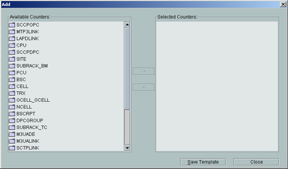

You can save the measurement counter in a custom template format through the Performance Browser Tool. The custom template can facilitate the query of the measurement counter.
Prerequisites
- The Performance Browser Tool runs normally.
- You have logged in to the FTP server of an NE.
Procedure
- In the navigation tree of the Browse Description File window, choose .
- Right-click Custom Template, and then choose Add. A dialog box is displayed, as shown in Figure 1.
Figure 1 Creating a custom template
- In the Add dialog box, select a measurement counter, and then click Save Template.
- The Info dialog box is displayed. Enter the template name.
- Click OK to save the template and to return the dialog box shown in Figure 1.
- Repeat 3, 4, through 5 to create other custom templates.
- Click Close.
Copyright © Huawei Technologies Co., Ltd.